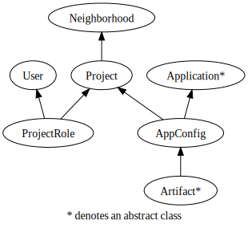

Vulcan Concepts¶
The Ming Object Document Mapper (ODM)¶
Vulcan applications use the Ming ODM which sits on pymongo to interact with the mongodb database. Most of the persisted core object types in a Vulcan application subclass Ming ming.odm.MappedClass. The Vulcan middleware handles setting up the database session.
For more details see the official Ming Documentation.
Core Object Classes¶
Vulcan provides framework support for organizing secured virtual teams. Projects are organized into Neighborhoods

Access Control¶
Access control is defined by the use of Access Control Lists (ACLs) and Access Control Entries (ACEs). Neighborhoods, Projects, AppConfigs, and Artifacts each have an ACL which inherits entries from it’s parent.